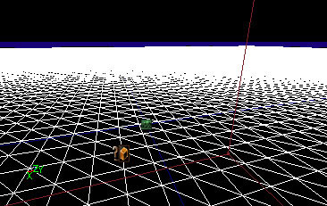

Creating A Terrain
This page is one of a sequence of Mapping Lessons.
This tutorial shows you how to quickly make a terrain in UnrealEd 3. This applies to the retail version of UT2003; other games' editors may be different versions of UnrealEd in which the tools don't all work, eg U2.
There is full reference for UnrealEd's terrain tools at Terrain Mode.
Preliminaries
We need a suitable zone to hold the terrain.
The World Space
If you don't already have some open space in your map for the terrain, create a room. If this is your first terrain, we recommend a large space: a box 8192x8192x8192 UU in size should do. But bear in mind that terrains can be created as big or as small as you want (and you can also have as many as you want). A terrain could be a small area of a map within architecture, such as a sandy courtyard, or the basic world space, such as with a large outdoor level.
Zone
Next add an Actor >> Info >> ZoneInfo if you don't already have one. This sets properties for this zone; and in particular we're going to use it to tell the engine that you want to render terrain in this zone.
Now set the following properties of the ZoneInfo actor:
- ZoneInfo → bTerrainZone = True
- In a very large space, we recommend Display → DrawScale = 8 or 12 or something so you can see the actor easily
You'll need to rebuild your map for the ZoneInfo to be tied to the zone it sits in.
Terrain size
Before you begin making the terrain, it's best to consider what size you want it to be.
Each pixel of the terrain's heightmap texture will represent one grid intersection of terrain, or quad. By default, a quad is 64x64 UU. So for example, a 256x256 pixel heightmap texture will produce a terrain that is 64 x 255 in each direction. Note the 255, not 256: each pixel represents the height of a grid intersection, not a grid square. This means that terrain has what you might consider to be  Fencepost error.
Fencepost error.
UnrealEd appears to allow you to create rectangular terrain, but the texture layers will cause it to crash later on if they are not square.
You can change the scale at any time to resize your terrain, but it will scale all your terrain's features too (which might not be what you want), and you'll also be off-grid (which might make things tricky).
Remember also that texture dimensions must be powers of 2: this limits your choice of possible terrain sizes. Roughly speaking, you'll probably want 256x256 for a large area, 512x512 for a HUGE area, and for things like sand in the corner of a room, as small as 16x16 perhaps. To measure out your terrain, try using the Cube Brushbuilder and enter dimensions in the format "64*n" for width and breadth. This will give you the heightmap texture dimensions for standard terrain scale.
For the purposes of this tutorial, 128x128 is adaquate for the 8192x8192x8192 box we have created.
Making the Terrain
There are two methods here.
- you can create from scratch in UnrealEd and use the internal tools to raise hills and drop valleys. This is the simplest and quickest method.
- or you can make a heightmap texture in an external graphics application, and import it. With this method, you'll be able to edit in UnrealEd later anyway.
From Scratch
This method adds a TerrainInfo actor for you automatically, and also creates a new heightmap texture for you.
- go into Terrain mode
- Select the "Tools" tab at the top of the floating Terrain Editing Window, then the "Terrains" tab below that
- Click on the "new terrain" icon (it just looks like a blank page at the very foot of the tab area)
- This pops up a New Terrain window. Set:
- Package: the package in which to store the new heightmap texture. Use MyLevel to embed it within you map
- Group: whatever you like
- Name: this will be the name of the heightmap texture that will be created. It will also be used to identify your terrain in the Terrain Mode window, so in a map with many terrains it's a good idea to use a clear name, eg 'RedBaseSand' not 'Terrain1'.
- XSize & YSize : the size of the heightmap texture in pixels.
- Height : the height of terrain that the midpoint grey in the heighmap texture will represent. This sets the vertical location of the initial plane of the terrain in relation to the game world. There is little to no reason for changing this. It can separate the terrain grid from the TerrainInfo actor marker and there does not seem to be a way to change it afterwards.
- Click OK
Now go into wireframe view. The TerrainInfo actor has been added for you and the terrain is ready for painting. Because the TerrainInfo has been added at the camera position, you'll need to move the camera about to see the terrain: it currently should look like a very big wireframe grid. You'll probably need to move up and look down to see it. If you don't see the grid, but only the TerrainInfo actor icon, try switching back to the Move tool and move the TerrainInfo slightly for UnrealEd to wake up.
You also may want to position the actor so the terrain's grid lines up with the world grid: do Actor Context Menu → Reset → Move to Origin. If you're working elsewhere in your map, set the TerrainInfo's Advanced → bEdShouldSnap and position it on-grid yourself.
Now skip ahead to the next section.
From a Heightmap Texture
This is a more complicated procedure. The terrain map you create externally should be a basic height map – an 8 bit grayscale image where white is interpreted as the highest point, and black is the lowest point.
Build your terrain map in a graphics application such as Adobe Photoshop, or a terrain-generating program such as Terragen. You will be able to edit it further within UnrealEd, so you might want to just lay down the basic elements. No matter how you do it, the terrain map needs to be saved as an 8-bit grayscale BMP file.
When you're ready, Import the texture and set:
- package: MyLevel to embed the texture within the level
- Un-check the "Generate MipMaps" checkbox
- give the texture a logical name you will remember!
You now need to add an Actor >> Info >> TerrainInfo to your map. This will later hold all the settings for the terrain: textures, heightmaps, etc.
After adding it, it's a good idea to do Actor Context Menu → Reset → Move to Origin. This will ensure that when the terrain is scaled up it meets the walls of the subtracted cube exactly.
Now you need to set the greyscale texture we imported to be used as the terrain's heightmap: Set the resource property TerrainInfo → TerrainMap to the terrain texture you just imported. (Select your texture in the texture browser, then click the Use button on the TerrainMap property.)
Once you've done this it's a good idea to rebuild the level & save it. Once you've rebuilt the level (both Geometry and BSP) you'll be able to see the terrain in the 3D UnrealEd viewport when it's in Wireframe mode.
To be able to edit the terrain height later within UnrealEd, you need to convert the heightmap texture to 16-bit greyscale. To do this, in the Terrain Mode window, go to the "Terrains" tab and right-click the block for your terrain in the list, and select "convert to G16" from the pop-up menu.
Setting some basic options
You now have a wireframe terrain and a TerrainInfo actor. It will only be visible in a 3D viewport set to wireframe mode.

|
Phlip: Correct me if I'm wrong, but it seems that the wireframe will only appear in the lower left viewport (or whichever one is blue when you go ) - so if you're like me and have that as a different view, you should change it back to a 3d view for terrain manipulation. You can still edit the terrain in another view, but you will only be able to see it and the red marker in the lower left viewport. (With UT2004, can people confirm for other versions?)
Bob_The_Beheader: Um...I'm having the same problem. I can occasionally see the terrain itself, all textured and fancy looking in the other viewports, but only once I have added a texture layer and applied that to the terrain itself, and have turned terrain viewing on in the other viewports.
Tarquin: Nope, I got it to show in the top left viewport. Not sure how, as at first I thought I was having the same problem as you guys. I think it's just that UEd needs some time to wake up and realize it has to render terrain....
This is as far as this tutorial goes. The next major thing to do will be to add a terrain texture layer. But before that, there's a few things we can quickly do.
Quick Height Painting
Just to make it a little bit more interesting, let's raise a few hills.
- Go into terrain mode
- select the Painting Terrain Tool in the list on the left of the window
- in the 3D wireframe UnrealEd Viewport, your cursor will show a red dot in the middle of two yellow circles when it is on the terrain. Do:
- CTRL-left mouse to raise the terrain in that area
- CTRL-right mouse to lower it
Wingnut: Is there any reason why the painting tool would not work for me using UT2004 patched to 3323?
enDLine.SPA: Wingnut yes, once you import your height map and use it in the terrain info highlight the texture in the terrain editor and right click it, convert it to G16 
Scaling the Terrain
Like everything in UT, you can scale your terrain in 3 dimensions. The default TerrainScale is 64 in each axis. This converts to world units by multiplying the scale by the size, in pixels, of the TerrainMap texture.
Because the texture we used was 256x256 pixels, this means that the size of our terrain is currently 64 x 256 in each direction, or 16384. Since the world space we subtracted was only 8192 in each direction, the terrain is twice the size of the world space.
In fact, there's nothing wrong with that – it won't cause any problems. And at some point you might find out you want to expand the level, so you've got plenty of room for expansion. But if you want to make the terrain fit exactly the 8192 unit large box it's in, then change the scale to 32 in the X and Y axes. You can use the Z axis scale to control how high the terrain is. The Z axis scaling also limits how high the terrain can be. I.e. it sets a maximum height. If you reach that height and find you want something to go higher, you'll need to set the Z scale larger. Of course, that will rescale everything else, so you should think about that in advance.
Moving on
- to actually see your terrain in other than wireframe, you need to add a layer: see Terrain Texture Layer
- you'll also want to light your terrain later. Terrains are affected by ambient lighting and normal lights, so you can use those as you would anywhere else in a map. However, if your map is going to be an outdoor level you'll want to use a Sunlight, which produces much more realistic outdoor lighting:
Next Lessons:
Note: in UT2003 you can't add Sunlight to your map unless it is in a SkyBox. Current build users should proceed directly to the second link first.
Lilguy: this is definitely not true. You only need the walls set to fake backdrop, and the sunlight should go in the level, not in the skybox. I'm not positive about ut2k3, but I'm pretty sure you don't even need a skybox in your map to make sunlight work. Can someone who still has ut2k3 verify this?
Tarquin: Works in 2003 as far as I can tell – no skybox & sunlight in the map, & surfaces set to fake backdrop. I'm finding it a pain to work with, but I doubt that's due to the lack of skybox.
Starweaver: OTOH, you CAN put the sunlights in the skybox if you want them to be global for areas with fakebackdrops as an acceptable design choice, right? (Though I wonder if the lighting propegates from the proper skybox when you're using something like MultiSkyBox...)
Comments
StarWeaver: I've noticed that the entire terrain grid likes disappearing when you move it too close to the outer solid world, so if you want terrain to work in the center of an area just the right size for it then entering the coordinates by hand on the terraininfo is probably a good idea. (Do we have a tutorial on that? [Manually position the object] or something? I might put one together later . . .)
Also, for making caves, I found adding two (sets of) temporary sunlights to the area helps a lot: the first pointing down will shine through the upper (bInverted) terrain onto the lower one, the second pointing up to do the reverse in a *different color*. You'll have to set *all* sides of the terrain area to fake backdrop though, and I would definatly use a skybox to prevent HOMage (and a giant, brightly lit generic rock texture shining through gaps in your terrain really helps find those gaps if you don't want them )
Maybe I'll write up a tutorial on making a cave. Heck, both this page and Terrain especially could really use some work or addition . . . .
Related Topics
- Terrain Texture Layer – your recommended next step
- Terrain Mode
- Terrain
- Architecture
Category Mapping
Category Tutorial
Refactor Me – Find info in discussions that can be added to tutorial (notes, tips) and do so.